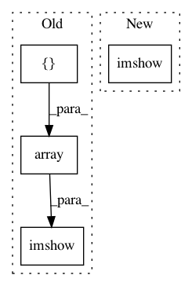

e3c42a0b8371bd4944efd70111c2458c28b9eca3,examples/saliency.py,,main,#,9
Before Change
seed_img = utils.load_img("../resources/ouzel_1.jpg", target_size=(224, 224))
saliency = Saliency()
grads_image = saliency.visualize(model, layer_dict[layer_name], [20],
np.array([seed_img], dtype=np.float32))
cv2.imshow("Importance map", utils.stitch_images([seed_img, grads_image], cols=1))
cv2.waitKey(0)
if __name__ == "__main__":
main()
After Change
seed_img = utils.load_img("../resources/ouzel_1.jpg", target_size=(224, 224))
saliency = Saliency()
heatmap = saliency.visualize(model.input, layer_dict[layer_name], [20], seed_img)
cv2.imshow("Importance map", heatmap)
cv2.waitKey(0)
if __name__ == "__main__":
main()
In pattern: SUPERPATTERN
Frequency: 3
Non-data size: 4
Instances
Project Name: raghakot/keras-vis
Commit Name: e3c42a0b8371bd4944efd70111c2458c28b9eca3
Time: 2016-12-15
Author: ragha@outlook.com
File Name: examples/saliency.py
Class Name:
Method Name: main
Project Name: raghakot/keras-vis
Commit Name: 5ee8d4a1719a4c1070924351af9c2119432e7066
Time: 2017-04-29
Author: ragha@outlook.com
File Name: examples/attention_maps.py
Class Name:
Method Name: generate_saliceny_map
Project Name: raghakot/keras-vis
Commit Name: 5ee8d4a1719a4c1070924351af9c2119432e7066
Time: 2017-04-29
Author: ragha@outlook.com
File Name: examples/attention_maps.py
Class Name:
Method Name: generate_cam